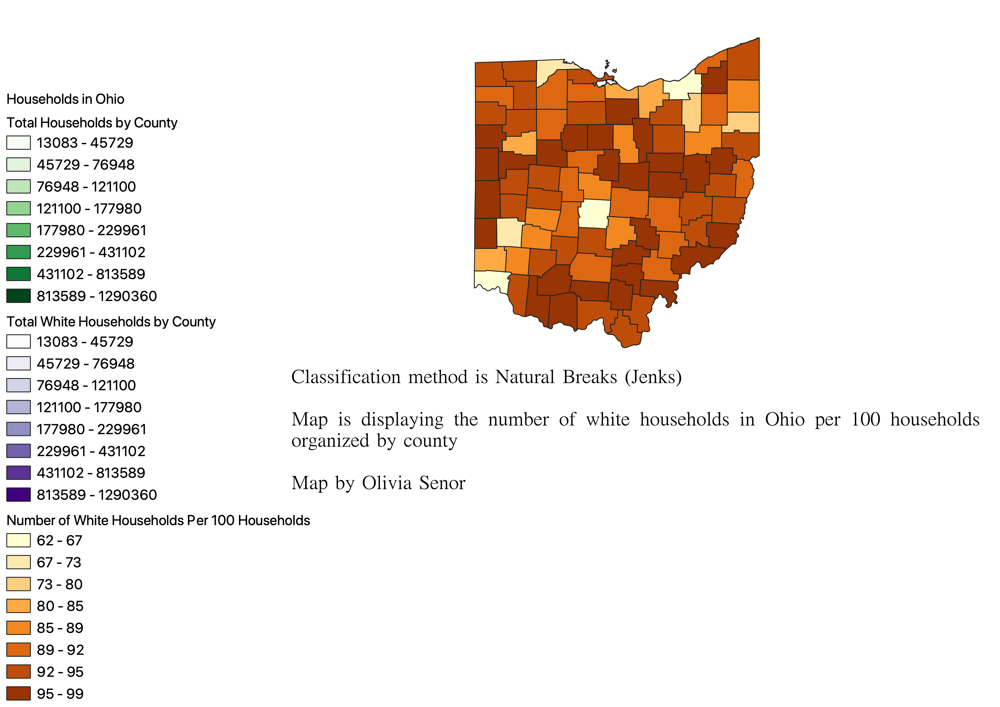
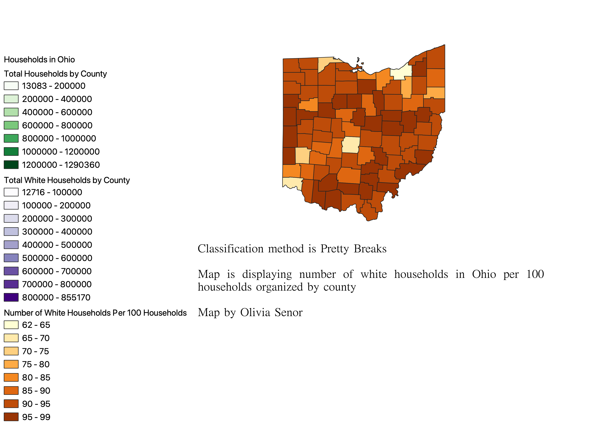
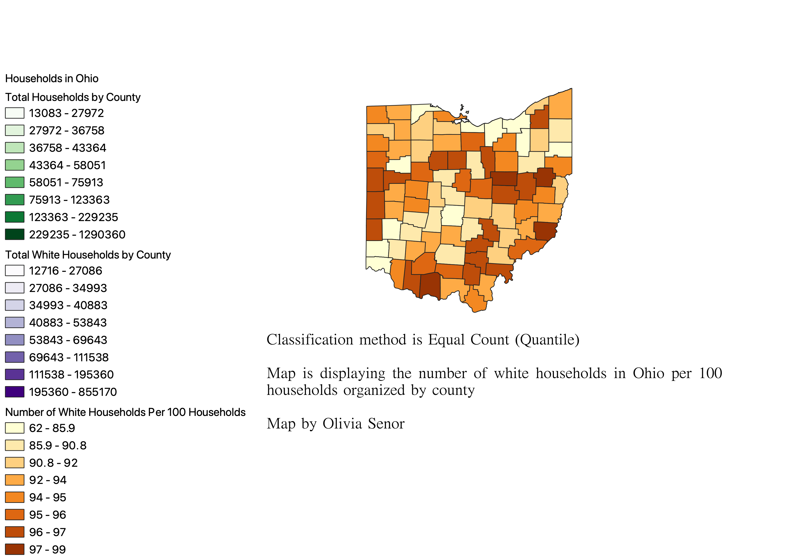

Homework 8: Census data ratios and categories
Olivia Senor
First, it is important to note that I used eight categories as Ohio possesses 88 total counties.
The ratio I used divided the number of white households by the total number of households by county in Ohio. I then multiplied this value by 100 to get the total number of white households per 100 households in Ohio by county. This method helps to show how diverse ~or not~ Ohio is. If you look at the maps below, it is clear that Ohio is majority-white-- in fact, the state ranks in the top 10 states with the least amount of diversity. Pretty sad.
The first categorization I used for my map was Natural Breaks (Jenks). The Natural Breaks method of classification is advantageous in that it groups values into classes with distinct breaking points. This map shows very clearly how Ohio is a majority-white state, but fails to show any real nuance or variation among the white households, as most counties fall into the categories of 92-95 or 95-99. A larger number of and more refined categories may well have represented these deviations, though they are minor, a little better.

The second categorization I used for my map was Pretty Breaks. The Pretty Breaks method of classification looks strikingly similar to the Natural Breaks (Jenks) method, showing clearly that Ohio is, well... not doing very well in the diversity category. Most counties fall into the 90-95 and 95-99 categories, much as they did for the first map. One of the advantages to Pretty Breaks is that it creates a legend that is very readable to viewers, with neat, rounded categories that make clear sense. It does, however, fall short when there is a skew in the data or a great deal of variation... unfortunately, some datasets are hard to group in an attractive way.

The final categorization I used for my map was Equal Count (Quantile). The Equal Count method of classification shows the most variation by far, and for this reason is my favorite visually. This method seems to show distinct categories and each category represents an equal number of counties as opposed to being skewed toward two as with the previous categorization methods. It is very disadvantageous, however, in that each category has wildly differing values. For example, the first few categories span different numerical values, but the last ones all deal with numbers in the 90s. This makes the state look much more diverse than it actually is, so in terms of accuracy and factual representation of the data, this method is my least favorite.
